If the vapour condenses at one of the walls, the vapour base enthalpy,
 ,
is naturally taken as the enthalpy of the vapour at
,
is naturally taken as the enthalpy of the vapour at  relative
to that of the condensed state at the same temperature. This can
easily make
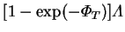
(the dimensionless `latent heat transfer')
the dominant component of the overall energy transfer (4.42).
This is the same conclusion as reached by
Yan et al. (1989),
from their numerical studies of the finite length channel. For points
well up the channel from the entrance, their results are well described
by the above formula.
relative
to that of the condensed state at the same temperature. This can
easily make
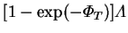
(the dimensionless `latent heat transfer')
the dominant component of the overall energy transfer (4.42).
This is the same conclusion as reached by
Yan et al. (1989),
from their numerical studies of the finite length channel. For points
well up the channel from the entrance, their results are well described
by the above formula.
For example, in their Case II
(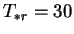 C,
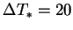K)
with both walls saturated with
water vapour and the total pressure about 1 atm), the dimensionless
parameters take on the values
and
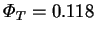.
Equation (4.42) gives
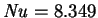. For a
point 560 channel widths up from the entrance,
Yan et al. (1989) give
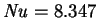, which is excellent agreement. With saturated boundary
conditions such as these, the vapour will certainly be supersaturated
in the channel, so that gas-phase condensation is possible,
but this was neglected in the cited work.
Equation (4.42) is therefore applicable.
C,
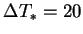K)
with both walls saturated with
water vapour and the total pressure about 1 atm), the dimensionless
parameters take on the values
and
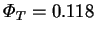.
Equation (4.42) gives
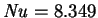. For a
point 560 channel widths up from the entrance,
Yan et al. (1989) give
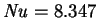, which is excellent agreement. With saturated boundary
conditions such as these, the vapour will certainly be supersaturated
in the channel, so that gas-phase condensation is possible,
but this was neglected in the cited work.
Equation (4.42) is therefore applicable.
It is obvious from this example that the humidity difference has a large effect on the energy transfer, as will often be the case.
Numerous further numerical examples, due to Dr Harry Suehrcke, supporting this conclusion can be found in our recent joint paper (Suehrcke & McBain 1998).